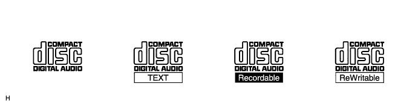
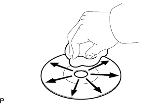
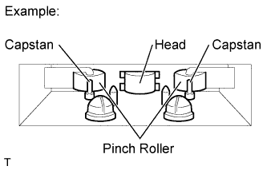
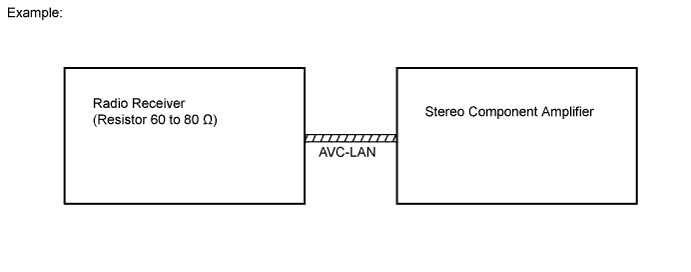

AUDIO AND VISUAL SYSTEM (w/o Multi-display) > SYSTEM DESCRIPTION |
| DISC PLAYER OUTLINE |
A CD player uses a laser pickup to read digital signals recorded on CDs. By converting the digital signals to analog, music and other content can be played.
Usable discs
CD player

Precautions for handling discs
Cleaning
 |
To clean dirty discs, use a dry, soft cloth such as those used for glasses with plastic lenses. Lightly wipe radially from the center of the disc.
| MP3/WMA OUTLINE |
Playable MP3 file standards
| Compatible standard | MP3 (MPEG1 LAYER3, MPEG2 LSF LAYER3) |
| Compatible sampling frequency |
|
| Compatible bit rate |
|
| Compatible channel mode | Stereo, joint stereo, dual channel, monaural |
Playable WMA file standards
| Compatible standard | WMA Ver. 7, 8, and 9 |
| Compatible sampling frequency | 32, 44.1, 48 (kHz) |
| Compatible bit rate |
|
ID3 tag and WMA tag
Additional textual information called ID3 tags can be input to MP3 files. Information such as song titles and artist names can be stored.
Additional textual information called WMA tags can be input to WMA files. Information such as song titles and artist names can be stored.
Usable media
Only CD-ROMs, CD-Rs (CD-Recordable), and CD-RWs (CD-ReWritable) can be used to play MP3/WMA files.
Usable media format
Usable media format
| Disc format | CD-ROM Mode 1, CD-ROM XA Mode 2 Form1 |
| File format | ISO9660 Level 1 and Level 2 (Joliet, Romeo) |
Standards and restrictions
| Maximum directory levels | 8 levels |
| Maximum number of characters for a folder name/file name | 32 characters |
| Maximum number of folders | 192 (Including empty folders, root folders, and folders that do not contain MP3/WMA files) |
| Maximum number of files in a disc | 255 (Including non-MP3/WMA files) |
File names
Only files with an extension of ".mp3" or ".wma" can be recognized and played as MP3 or WMA files.
Save MP3 or WMA files with an extension of ".mp3" or ".wma".
| CASSETTE TAPE PLAYER OUTLINE |
 |
Tape Player / Head Cleaning:
Raise the cassette door with your finger. Using a pencil or similar object, push in the guide.
Using a cleaning pen or cotton applicator soaked in cleaner, clean the head surface, pinch rollers and capstans.
| AVC-LAN DESCRIPTION |
What is AVC-LAN?
AVC-LAN, an abbreviation for "Audio Visual Communication Local Area Network", is a united standard developed by the manufacturers in affiliation with Toyota Motor Corporation. This standard pertains to audio and visual signals as well as switch and communication signals.

Purpose:
Recently, car audio systems have rapidly developed and the functions have vastly changed. The conventional car audio system is being integrated with multimedia interfaces similar to those in navigation systems. At the same time, customers are demanding higher quality from their audio systems. This is an overview of the standardization background. The specific purposes are as follows:
To solve sound problems, etc. caused by using components of different manufacturers through signal standardization.
To allow each manufacturer to concentrate on developing the products they do best. From this, reasonably priced products can be produced.
| COMMUNICATION SYSTEM OUTLINE |
Components of the audio system communicate with each other via the AVC-LAN.
The master component of the AVC-LAN is a radio receiver with a 60 to 80 Ω resistor. This is essential for communication.
If a short circuit or open circuit occurs in the AVC-LAN circuit, communication is interrupted and the audio system will stop functioning.
| DIAGNOSTIC FUNCTION OUTLINE |
The audio system has a diagnostic function. The result is indicated on the master unit.
A 3-digit hexadecimal component code (physical address) is allocated to each component on the AVC-LAN. Using this code, the component can be displayed in the diagnostic function.